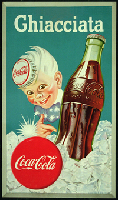
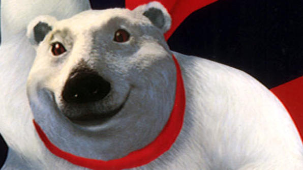

In 1942, Coca-Cola introduced "Sprite Boy," a character who appeared with Santa Claus in Coca-Cola advertising throughout the 1940s and 1950s. Sprite Boy, who was also created by Sundblom, got his name due to the fact that he was a sprite, or an elf. (It wasn’t until the 1960s that Coca-Cola introduced the popular beverage Sprite.)

Let's not forget the polar bears!
